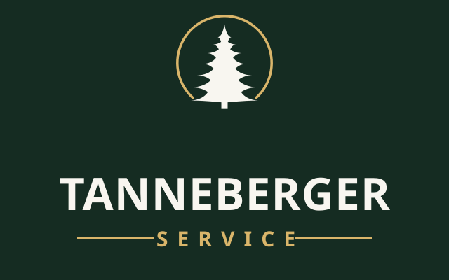
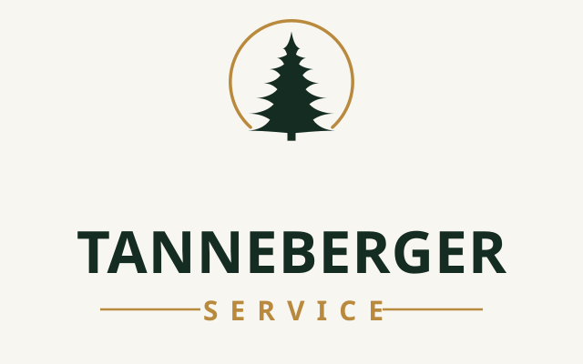
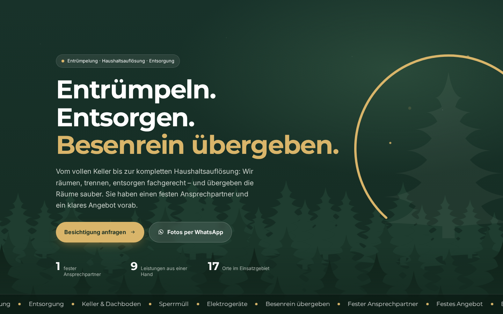

Markenhandbuch · Entwurf November 2026
01 · Logo
Übernommen von der bestehenden Visitenkarte und als Vektor neu gezeichnet: Tanne im offenen Goldring, Wortmarke TANNEBERGER (Montserrat ExtraBold), darunter SERVICE in Gold mit Linien.

02 · Farben
Verhältnis: viel Creme und Tannengrün, Gold sparsam als Akzent (Ring, Linien, Knopf). Knopf-Text auf Hellgold immer Tannengrün (gut lesbar), nie Weiß.
03 · Schrift & Sprache
Entrümpeln.
Besenrein.
Montserrat – Logo, Überschriften, Knöpfe. Fett (700/800). Kleine Überzeilen in Großbuchstaben mit weitem Abstand: TELEFON
Vom vollen Keller bis zur kompletten Haushaltsauflösung: Wir räumen, trennen, entsorgen fachgerecht – und übergeben die Räume sauber.
Inter – Fließtext, Formulare, Preise. Normal (400), wichtige Wörter halbfett (600).
04 · Anwendung

ci/ (SVG = beliebig groß druckbar).